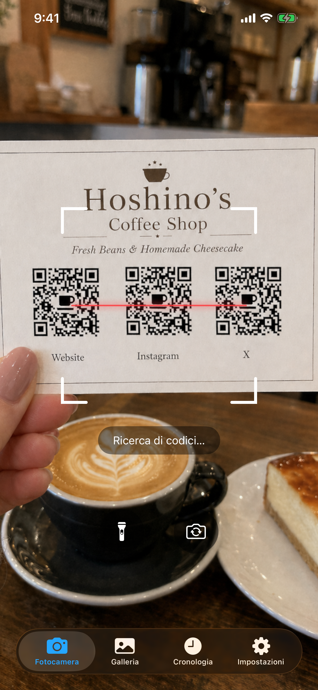
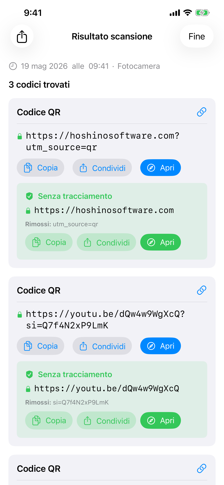
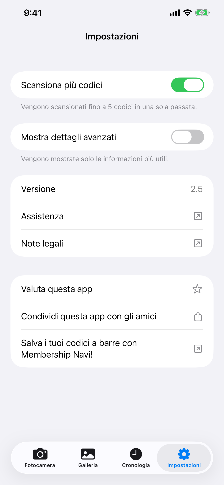

Lettore Codici
Lettore Codici scansiona codici a barre e QR code tramite la fotocamera del tuo iPhone o da qualsiasi immagine nella tua libreria foto. Funziona completamente offline, non archivia nulla nel cloud e non mostra mai pubblicità.
Download


Lettore Codici è gratuito da scaricare su App Store. Nessun account richiesto. Richiede iOS 26 o versioni successive. Un aggiornamento Premium opzionale una tantum sblocca cronologia lunga, ricerca nella cronologia, scansione multi-codice e dettagli avanzati.
Supporto
Hai una domanda, trovato un bug o hai bisogno di aiuto con l'app? Contattaci. Leggiamo ogni messaggio.
Prima di scrivere
Molti problemi comuni sono trattati nel Manuale e nelle FAQ qui sotto. Qualche verifica rapida:
- Fotocamera non funzionante? Vai in Impostazioni iPhone → Privacy e sicurezza → Fotocamera → abilita l'accesso per Lettore Codici.
- Non trovi la cronologia? Tocca la scheda Cronologia. Il piano gratuito conserva le tue ultime 20 scansioni per 7 giorni; l'aggiornamento Premium ne conserva fino a 10.000 senza limiti di tempo.
- Il codice non viene scansionato? Assicurati di avere una buona illuminazione e tieni il codice fermo. Prova la modalità Galleria se hai un file immagine.
- L'app si blocca? Forza la chiusura e riaprila. Se il problema persiste, scrivici indicando il modello di iPhone e la versione iOS.
Domande frequenti
- Richiede una connessione internet?
No. Lettore Codici funziona completamente offline. - Raccoglie i miei dati?
No. Nulla viene caricato da nessuna parte. La cronologia delle scansioni è archiviata solo sul tuo dispositivo. - Accede all'intera libreria foto?
No. Nella scheda Galleria, selezioni una singola foto tramite il selettore foto di sistema. Lettore Codici non accede mai alla tua libreria. - Perché la modalità multi-codice richiede un po' più di tempo?
La modalità multi-codice (una funzione Premium) rileva fino a 5 codici contemporaneamente. La fotocamera raccoglie i codici in una breve finestra di frame per assicurarsi di catturare tutti i codici visibili prima di mostrare il risultato. - Per quanto tempo viene conservata la cronologia delle scansioni?
Il piano gratuito conserva le tue ultime 20 scansioni fino a 7 giorni. L'aggiornamento Premium ne conserva fino a 10.000 senza limiti di tempo e aggiunge la ricerca a testo completo. - Perché non naviga automaticamente verso un link?
È intenzionale. I QR code falsi o dannosi sono comuni: nei parcheggi, sui tavoli dei ristoranti e altrove. Mostrarti l'URL prima di aprirlo ti consente di verificare che sia sicuro.
Manuale



Fotocamera
La scheda Fotocamera si apre e inizia a scansionare immediatamente. Punta il telefono su qualsiasi codice a barre o QR code e l'app lo rileva automaticamente. È necessario il permesso per la fotocamera. Se non lo hai ancora concesso, apparirà una richiesta. Tocca Apri Impostazioni e abilita l'accesso alla Fotocamera per Lettore Codici.
- Torcia: tocca il pulsante della torcia per illuminare ambienti bui. Disponibile solo con la fotocamera posteriore.
- Fotocamera frontale: tocca il pulsante di rotazione per passare dalla fotocamera posteriore a quella frontale. Utile quando la fotocamera posteriore non è disponibile (ad esempio, danneggiata).
Galleria
La scheda Galleria ti consente di scansionare codici da un'immagine esistente. Tocca Scegli foto per selezionare qualsiasi immagine dalla tua libreria. Solo la foto specifica che scegli viene condivisa con l'app. Lettore Codici non richiede l'accesso all'intera libreria foto.
Dopo aver selezionato una foto, l'app la scansiona e mostra il risultato immediatamente. Se non viene trovato alcun codice, un avviso te lo comunicherà.
Cronologia
Ogni scansione viene salvata automaticamente nella scheda Cronologia. Il piano gratuito conserva le tue ultime 20 scansioni fino a 7 giorni; le più vecchie vengono rimosse automaticamente quando viene raggiunto il limite. L'aggiornamento Premium conserva fino a 10.000 scansioni senza limiti di tempo e aggiunge la ricerca a testo completo.
- Visualizza una scansione precedente: tocca qualsiasi riga per riaprire il risultato completo.
- Elimina una voce: scorri verso sinistra su una riga e tocca Elimina.
- Elimina tutto: tocca l'icona del cestino nell'angolo in alto a destra.
- Etichetta sorgente: ogni voce indica se proviene dalla Fotocamera, dalla Galleria o da una Condivisione.
- Ricerca (Premium): in cima alla lista appare una barra di ricerca. Digita un testo qualsiasi e le voci vengono filtrate mentre scrivi; la ricerca confronta il valore decodificato di ogni codice.
Impostazioni
La scheda Impostazioni si apre con una riga di stato Premium in alto, seguita dagli interruttori delle funzioni e dalle informazioni sull'app.
Riga Premium
Se non hai ancora effettuato l'aggiornamento, vedrai una riga Passa a Premium che apre la schermata di acquisto, oltre a una riga Ripristina acquisti per recuperare l'accesso se l'hai già acquistato con questo ID Apple (ad esempio, dopo una reinstallazione o su un nuovo dispositivo). Una volta aggiornato, la riga si trasforma in un messaggio verde di ringraziamento.
Modalità multi-codice (Premium)
Per impostazione predefinita, Lettore Codici si ferma non appena trova un codice. Con Premium puoi attivare la Modalità multi-codice per rilevare fino a 5 codici contemporaneamente, utile per biglietti da visita, schede prodotto o qualsiasi immagine contenente più codici affiancati. La fotocamera continua a scansionare per un breve momento dopo la prima rilevazione per raccogliere tutti i codici visibili prima di mostrare i risultati.
Mostra dettagli avanzati (Premium)
Con Premium puoi attivare Mostra dettagli avanzati per visualizzare i metadati tecnici accanto a ogni risultato di scansione: versione QR, livello di correzione degli errori, schema di mascheramento o struttura del codice a barre (caratteri di inizio/fine, cifra di controllo). Queste informazioni vengono mostrate nella pagina del risultato e nelle righe della scheda Cronologia.
Premium
Lettore Codici è gratuito da scaricare e l'esperienza di scansione principale è anch'essa gratuita. L'aggiornamento Premium è un acquisto in-app una tantum che sblocca quattro potenti funzioni:
- Cronologia lunga: conserva fino a 10.000 scansioni senza limiti di tempo. Il piano gratuito è limitato a 20 voci / 7 giorni.
- Ricerca nella cronologia: nella scheda Cronologia appare una barra di ricerca. Trova qualsiasi scansione passata in pochi secondi per contenuto.
- Scansione multi-codice: rileva fino a 5 codici per passaggio.
- Dettagli avanzati: visualizza i metadati di simbologia, la struttura del codice a barre e i dati decodificati completi per ogni codice.
L'acquisto è un pagamento una tantum, non un abbonamento. Nessun costo ricorrente e nessun server coinvolto; tutto rimane sul tuo dispositivo. L'acquisto è compatibile con In Famiglia, quindi tutti i membri del tuo gruppo Famiglia Apple ricevono automaticamente l'aggiornamento.
Per acquistare o ripristinare, vai alla scheda Impostazioni. La riga Passa a Premium apre la schermata di acquisto; la riga Ripristina acquisti recupera un acquisto esistente con questo ID Apple. Anche la schermata di acquisto ha un pulsante Ripristina acquisti, nel caso in cui ci arrivi prima.
Risultati di scansione
Quando viene rilevato un codice, Lettore Codici mostra il contenuto prima di fare qualsiasi cosa. Vedi sempre prima i dati grezzi, insieme ai pulsanti Copia e Condividi. Se il codice contiene un URL (comune nei QR code), appare un pulsante Apri. Toccandolo si apre il link nel browser predefinito, non in un browser integrato nell'app. Nessun dato di navigazione viene raccolto.
Lettore Codici riconosce automaticamente i tipi di codice speciali e mostra azioni contestuali:
| Tipo di codice | Cosa puoi fare |
|---|---|
| 🌐 URL / Link | Apri nel browser predefinito · Copia · Condividi |
| 📶 Rete Wi-Fi | Connetti direttamente · Copia password |
| 👤 Contatto (vCard / MECARD) | Salva nei Contatti con anteprima |
| 📅 Evento calendario | Aggiungi al Calendario |
| Componi email precompilata | |
| 💬 SMS / Messaggio | Invia messaggio |
| 📞 Numero di telefono | Chiama |
| 📍 Posizione / Geo | Apri in Mappe |
| 📹 FaceTime | FaceTime o FaceTime Audio |
| ₿ Bitcoin | Copia indirizzo |
| ✈️ Carta d'imbarco | Dettagli del volo estratti da Aztec / PDF417 |
Con Mostra dettagli avanzati attivo (una funzione Premium, nelle Impostazioni), nella pagina dei risultati appaiono due sezioni aggiuntive:
- Dati decodificati: la stringa grezza codificata nel codice a barre, prima di qualsiasi elaborazione.
- Struttura: analisi tecnica del codice a barre: caratteri di inizio/fine, cifra di controllo, pattern di guardia ed elementi simili a seconda del tipo di codice.
Per i QR code, appaiono anche chip di metadati che mostrano il numero di versione, il livello di correzione degli errori e lo schema di mascheramento.
Rilevamento dei parametri di tracciamento
Quando un URL contiene parametri di tracciamento, Lettore Codici mostra una scheda verde Senza tracciamento sotto i dati grezzi. La scheda mostra l'URL ripulito, una riga Rimossi: con i parametri eliminati (tag UTM e ID clic di Facebook, Google Ads, Microsoft, TikTok e molti altri) e i pulsanti Copia / Condividi / Apri, che agiscono tutti sull'URL ripulito. Raggiungi la stessa pagina senza essere tracciato.
Scansione da un'altra app
Puoi scansionare un codice che appare in una foto all'interno di qualsiasi altra app (un messaggio, un'email, un visualizzatore di documenti o un browser web) senza lasciare quell'app.
Tramite Condividi:
- Apri l'immagine nella galleria o in qualsiasi app, poi tocca il pulsante Condividi.
- Nell'elenco delle app che appare, trova e tocca Lettore Codici. Se non lo vedi, scorri fino alla fine dell'elenco e tocca Altro.
- L'app si apre e scansiona l'immagine automaticamente.
Tramite Azioni:
- Apri l'immagine nella galleria o in qualsiasi app, poi tocca il pulsante Condividi.
- Scorri la riga delle azioni sotto l'elenco delle app e tocca Scan for Codes.
- L'app si apre e scansiona l'immagine automaticamente.
Widget nella schermata Home
Puoi aggiungere un widget alla schermata Home come collegamento rapido all'app. Toccandolo si apre direttamente la fotocamera, pronta per la scansione. I widget sono disponibili in tre dimensioni (piccola, media, grande), così puoi scegliere quella più adatta al layout della tua schermata Home.
- Tieni premuto su un'area vuota della schermata Home finché le icone iniziano a tremare.
- Tocca il pulsante + nell'angolo in alto a sinistra.
- Cerca Lettore Codici.
- Scegli una dimensione e tocca Aggiungi widget.
- Puoi ridimensionarlo in seguito tenendo premuto il widget e scegliendo Modifica widget.
Control Center
Control Center è il pannello che scorre verso il basso quando scorri dall'angolo in alto a destra dello schermo. Puoi aggiungere un pulsante di Lettore Codici per avviare la fotocamera con un solo tocco da qualsiasi luogo, inclusa la schermata di blocco o mentre usi un'altra app.
- Scorri dall'angolo in alto a destra per aprire Control Center.
- Tocca il pulsante + per entrare in modalità modifica.
- Trova Lettore Codici nell'elenco e toccalo per aggiungerlo.
- Puoi trascinarlo per riposizionarlo e ridimensionarlo mentre sei in modalità modifica.
Tipi di codice supportati
| Codice | Note |
|---|---|
| QR Code | Il codice 2D più comune. Usato per URL, Wi-Fi, contatti e altro |
| Micro QR | Variante compatta del QR Code per etichette piccole con spazio limitato |
| Aztec | Usato su carte d'imbarco e biglietti di trasporto |
| Data Matrix | Comune nella produzione, nella sanità e nella logistica |
| PDF417 | Usato su patenti di guida, carte d'imbarco ed etichette di spedizione |
| Micro PDF417 | PDF417 compatto per articoli piccoli come confezioni farmaceutiche |
| EAN-8 | Codice a barre corto per prodotti al dettaglio di piccole dimensioni |
| EAN-13 | Codice a barre standard presente sulla maggior parte dei prodotti di consumo nel mondo |
| UPC-E | Codice a barre compatto usato su piccole confezioni al dettaglio negli USA e in Canada |
| Code 39 | Uno dei codici a barre più antichi, comune in ambienti industriali |
| Code 93 | Successore ad alta densità del Code 39 |
| Code 128 | Codice a barre ad alta densità ampiamente usato nella logistica e nelle spedizioni |
| ITF-14 | Codice a barre a 14 cifre stampato su scatole di spedizione in cartone ondulato |
| Codabar | Usato in biblioteche, banche del sangue e alcune società di spedizione |
| GS1 DataBar | Codice a barre compatto per articoli piccoli come prodotti freschi |
| GS1 DataBar Expanded | Variante estesa che contiene dati aggiuntivi come peso e data di scadenza |
Non supportati:
| Codice | Note |
|---|---|
| EAN-2 / EAN-5 (add-on) | Supplementi numerici brevi allegati all'EAN-13, usati per i numeri di edizione delle riviste e il prezzo dei libri |
| rMQR | Micro QR rettangolare, una variante QR compatta più recente progettata per etichette strette |
| MaxiCode | Codice a matrice 2D usato da UPS sulle etichette di spedizione |
| SP Code | Codice a barre di accessibilità giapponese che codifica dati audio parlati |
| Codici postali | Codici a barre postali a 4 stati usati dai servizi postali nazionali (USPS Intelligent Mail, Royal Mail, Australia Post, Japan Post e altri) |
| Codici app proprietari | Codici visivi personalizzati che solo l'app emittente può scansionare |
Codici demo
Scansionali direttamente da questa schermata con la fotocamera, o fai uno screenshot e usa la scheda Galleria.
 | QR Code URL con parametri di tracciamento https://hoshinosoftware.com?utm_source=review&utm_campaign=demo |
 | QR Code Rete Wi-Fi WIFI:S:example-wifi;T:WPA;P:example-password;; |
 | QR Code Email mailto:test@example.com |
 | QR Code Contatto (vCard) BEGIN:VCARD VERSION:3.0 N:Last;First FN:First Last ORG:Company TITLE:Job Title ADR:;;Street;City;CA;90401;USA TEL;WORK;VOICE: TEL;CELL:+1234567890123 TEL;FAX: EMAIL;WORK;INTERNET:example@example.com URL:https://example.com END:VCARD |
 | Micro QR QR compatto per piccole etichette HELLO |
 | Aztec (Full) Trasporto / carte d'imbarco AZTEC-DEMO-CODE |
 | Aztec (Compact) Variante compatta per piccole etichette AZTEC-DEMO-CODE |
 | Data Matrix (Square) Produzione / sanità DATAMATRIX |
 | Data Matrix (Rectangular) Variante rettangolare per etichette strette DATAMATRIX |
 | PDF417 Documenti d'identità / etichette di spedizione PDF417 SAMPLE DATA |
 | Micro PDF417 PDF417 compatto per piccoli articoli MICROPDF417 SAMPLE DATA |
 | EAN-13 Codice a barre prodotto al dettaglio 5901234123457 |
 | UPC-E Codice a barre compatto (US/Canada) 01234565 |
 | Code 128 Logistica / spedizioni CODE-128-DEMO |
 | ITF-14 Codice a barre scatola di spedizione 12345678901231 |
 | GS1 DataBar Codice a barre compatto per piccoli articoli 0112345678901231 |
Note legali
Informativa sulla Privacy
Ultimo aggiornamento: aprile 2026
Introduzione
Lettore Codici è costruito su un principio semplice: i tuoi dati appartengono a te. Questa Informativa sulla Privacy spiega a quali informazioni l'app accede e come vengono gestite.
Accesso alla fotocamera
L'app utilizza la fotocamera del tuo dispositivo per scansionare codici a barre e codici QR in tempo reale. Il flusso della fotocamera viene elaborato interamente sul tuo dispositivo. Nessuna immagine o fotogramma video viene mai archiviato, caricato o condiviso.
Cronologia delle scansioni
I risultati delle scansioni vengono salvati localmente sul tuo dispositivo utilizzando la tecnologia di archiviazione integrata di Apple. Questi dati non lasciano mai il tuo dispositivo e non vengono mai trasmessi ad alcun server. Puoi eliminare la cronologia delle scansioni in qualsiasi momento dall'app.
Nessuna connessione Internet richiesta
Lettore Codici funziona completamente offline. L'app non effettua richieste di rete. I tuoi dati non lasciano mai il tuo dispositivo.
Nessuna raccolta di dati
Non raccogliamo, archiviamo né elaboriamo alcuna informazione personale. L'app non richiede account né alcuna forma di registrazione.
Acquisti in-app
Lettore Codici offre un aggiornamento Premium opzionale una tantum. Gli acquisti vengono gestiti interamente da StoreKit di Apple; non riceviamo alcuna informazione personale relativa al tuo acquisto. L'app memorizza solo un'indicazione che possiedi l'aggiornamento. Oltre a quanto Apple stessa gestisce come parte dell'App Store, nessun dato di acquisto lascia il tuo dispositivo.
Servizi di terze parti
Lettore Codici non utilizza servizi di analisi, pubblicità o tracciamento di terze parti. Nessun dato viene condiviso con terze parti.
Privacy dei minori
Poiché non vengono raccolti dati personali, Lettore Codici è sicuro per utenti di tutte le età e rispetta il COPPA e normative analoghe in tutto il mondo.
Modifiche a questa informativa
Potremmo aggiornare questa Informativa sulla Privacy di tanto in tanto. Le modifiche sono efficaci immediatamente dopo la pubblicazione. Ti invitiamo a consultare periodicamente questa pagina.
Contattaci
Per domande su questa Informativa sulla Privacy: support [at] hoshinosoftware [dot] com
Termini di Servizio
Ultimo aggiornamento: aprile 2026
Accettazione dei termini
Scaricando o utilizzando Lettore Codici, accetti di essere vincolato da questi Termini di Servizio. Se non sei d'accordo, ti preghiamo di non utilizzare l'app.
Licenza
Hoshino Software ti concede una licenza personale, non trasferibile e non esclusiva per utilizzare Lettore Codici sui tuoi dispositivi Apple, in conformità con questi termini e con i Termini di Servizio dell'App Store di Apple.
Uso consentito
Puoi utilizzare Lettore Codici solo per scopi leciti. Ti impegni a non utilizzare l'app in modi che violino le leggi o i regolamenti applicabili.
Nessuna garanzia
Lettore Codici è fornito "così com'è" senza garanzie di alcun tipo, esplicite o implicite. Non garantiamo che l'app sia priva di errori, ininterrotta o adatta a uno scopo specifico.
Limitazione di responsabilità
Nella misura massima consentita dalla legge applicabile, Hoshino Software non sarà responsabile per danni diretti, indiretti, incidentali, speciali o consequenziali derivanti dall'uso o dall'impossibilità di usare Lettore Codici.
Modifiche ai presenti termini
Potremmo aggiornare questi Termini di Servizio di tanto in tanto. L'uso continuato dell'app dopo la pubblicazione delle modifiche costituisce accettazione dei termini aggiornati.
Legge applicabile
Questi termini sono disciplinati dalle leggi della giurisdizione in cui opera Hoshino Software.
Contattaci
Per domande su questi Termini di Servizio: support [at] hoshinosoftware [dot] com